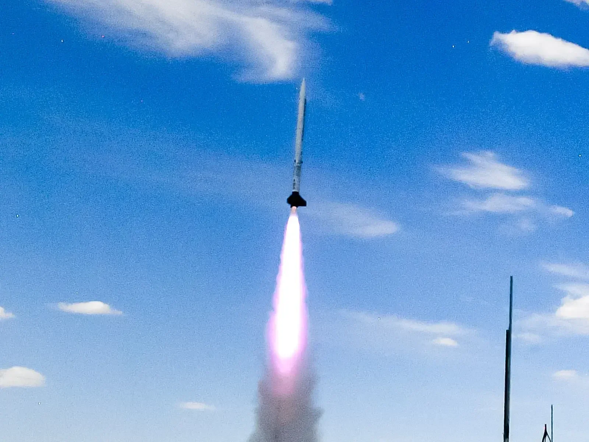
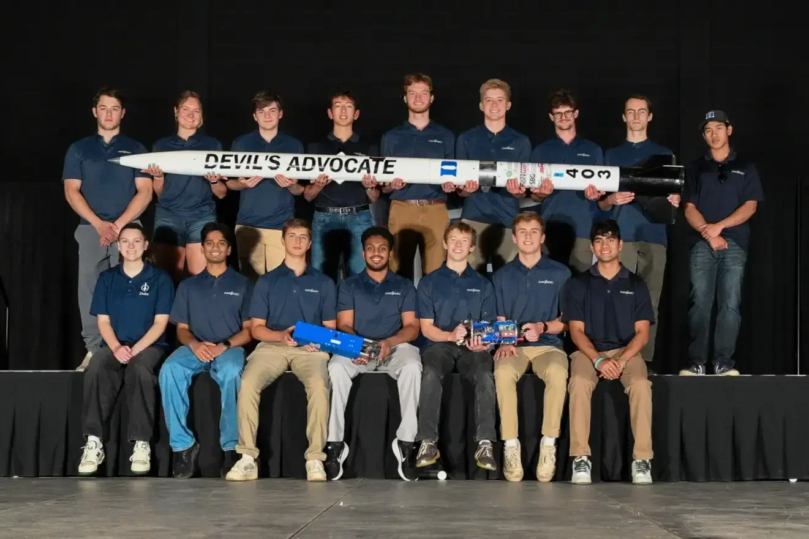
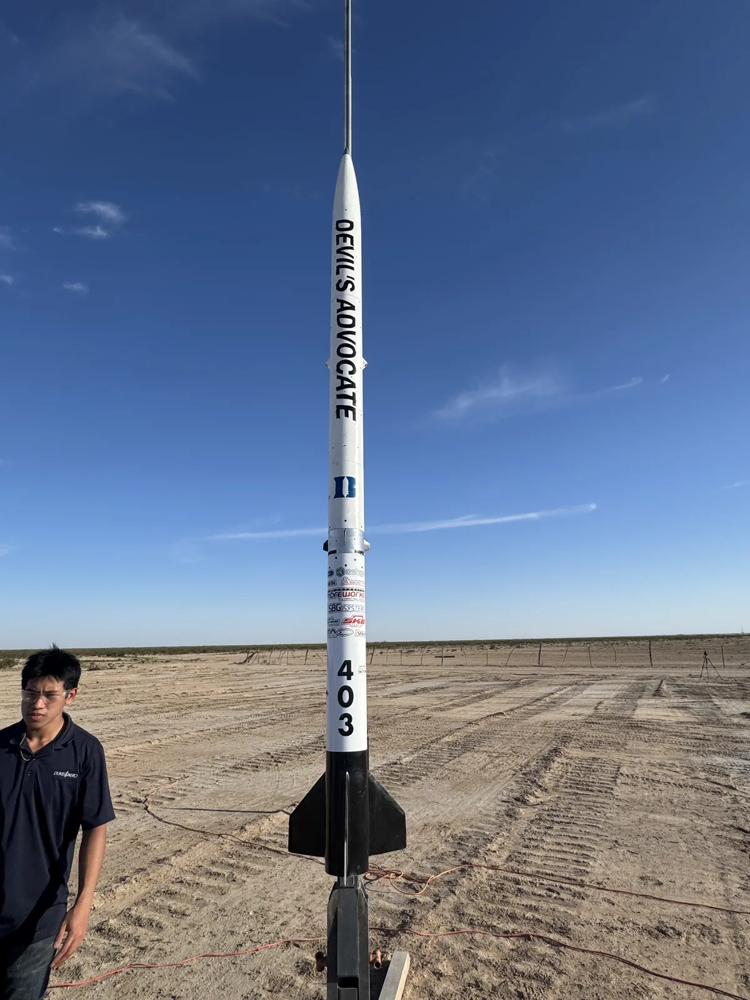
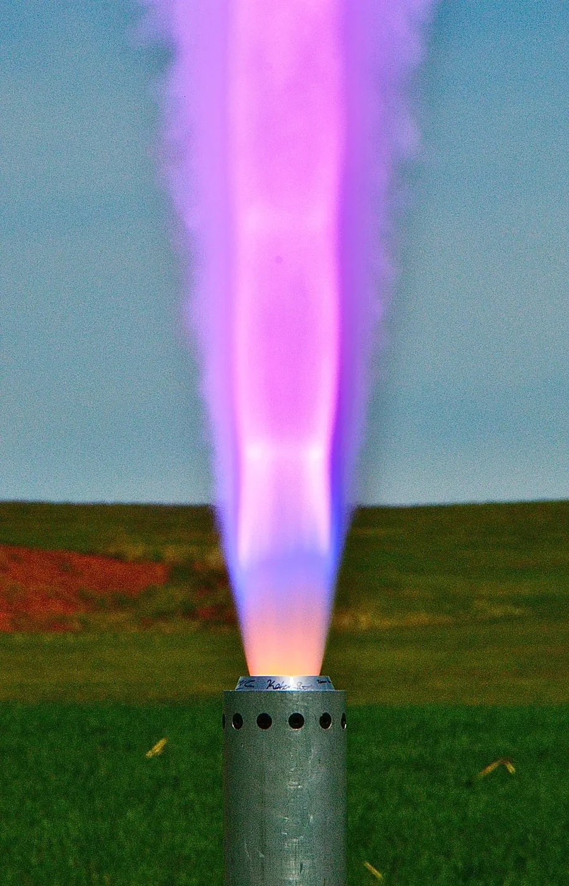

Devil's Advocate
30k-SRAD Solid Propulsion — IREC 2026



Member of the solid propulsion and structures teams. Contributed across motor development, airframe fabrication, and machined hardware.
Devil's Advocate is Duke Aero's 3rd vehicle in the 30k-SRAD category — 11.5 ft tall, 126 lb, powered by a student-built O-4384 solid motor (37,700 Ns total impulse, ~8 kN max thrust) to Mach 1.7. It deployed Kratos, a 5U CubeSat payload, at apogee and flew a second-generation control stack with airbrakes and roll-stabilizing canards. Placed 3rd in the 30,000 ft SRAD propulsion category at IREC 2026.
I traveled to Midland, Texas over the summer to attend IREC and compete with the team in person.
Solid Propulsion
- Helped machine the nozzle casing (6061 aluminum) on a CNC lathe — nozzle and casing survived a full-duration static hot fire and the launch at IREC
- Assisted with propellant grain mixing
- Participated in static hot fire test of the motor
Structures
- Carbon fiber body tube wraps — cut pre-impregnated carbon fiber and assisted with layup
- Machined components for the canards and air brake housing


